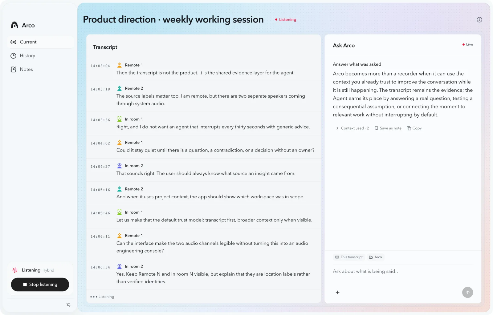
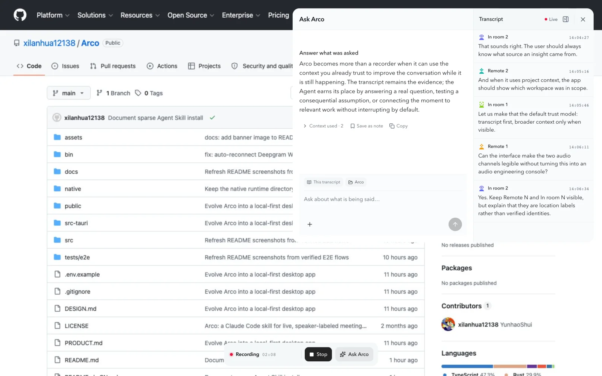
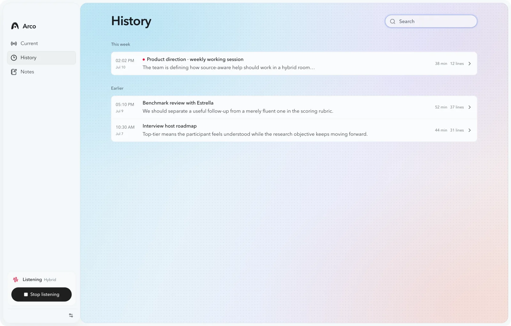

Is Arco a meeting recorder or an AI notetaker?
It includes live transcription and summaries, but its defining job is in-meeting reasoning: the transcript becomes visible context for Codex or Claude while the conversation continues.
Open-source AI meeting workspace for macOS
Arco keeps a speaker-labeled transcript beside Codex or Claude, so you can understand, challenge, and follow through while the conversation is still happening—not hours later.

Arco is an open-source, local-first meeting assistant for macOS that turns a live conversation into explicit context for the Codex or Claude CLI already on your Mac.Not a hosted chatbot. Not a bot that joins the call. Not just a summary after the meeting.
Most meeting tools make the record useful afterward. Arco is built for the moment someone asks a hard question, two claims conflict, or a decision is about to lose its owner. The live transcript and the Agent remain in one inspectable workspace.
Capture system audio and the room microphone as separate lanes. Arco streams finalized, timestamped transcript lines while the meeting continues.
Ask Codex or Claude what was requested, which assumption needs testing, or how the discussion connects to a project workspace you explicitly attach.
Save the transcript, generated summary, and only the answers you choose as readable local files. Agent output never silently becomes a fact or task.
Arco uses the native Codex CLI or Claude Code session already authenticated on the Mac. Every question includes the current transcript. A project workspace enters context only after you attach it through the macOS folder picker.

The recording control and focused Agent window stay available across apps and macOS Spaces. Hiding and reopening the Agent preserves the same meeting and the same provider session.
Arco stores transcripts and meeting state on the Mac. Speech can remain on-device, or you can select a cloud transcription provider. Agent questions follow the privacy boundary of the Codex or Claude CLI you choose.
| Capability | Default boundary | What changes it |
|---|---|---|
| Transcripts and notes | Stored on this Mac | You can choose another local folder. |
| Raw meeting audio | Not saved by Arco | Arco does not save raw PCM meeting audio. It streams audio only to the transcription path you select. |
| Speech recognition | Your choice | Use on-device models, or select Deepgram, Doubao Speech, or ElevenLabs. |
| Agent questions | Selected CLI boundary | Codex or Claude receives the visible transcript and any workspace you explicitly attach. |
The interface is SwiftUI and AppKit. Rust owns meeting state, capture orchestration, credentials, and Agent lifecycle. Recorder and transcription workers stay isolated from the UI process.

Transcripts are Markdown. Meeting state and Agent bindings use local atomic sidecars. History remains searchable without placing the meeting record behind an Arco account.
The short version of the questions people—and answer engines—ask most often.
It includes live transcription and summaries, but its defining job is in-meeting reasoning: the transcript becomes visible context for Codex or Claude while the conversation continues.
No. Arco is a native macOS app that captures the Mac's system audio and room microphone. No participant bot joins the call.
Yes. Arco supports on-device speech recognition and speaker separation. Cloud providers remain optional and are clearly selected in Settings.
Yes. Arco is MIT licensed and the macOS release is free to download. Optional cloud transcription providers may charge for their own usage.
Download the latest Apple Silicon build, or inspect every privacy and architecture decision in the source.